Shift patterns, machinery, LOTO, COSHH, training, asset checks and quality systems that live or die by discipline. Onos unifies EHSQ so the factory runs one system, not five.
Two systems, two cultures, one production line — and findings that never meet.
What nights discovered, days never hears about.
Inspection, maintenance and defect histories scattered per asset and era.
ISO 45001, 14001 and 9001 each trigger their own evidence hunt.
Q spots patterns across shifts, machines, issues and actions; keeps your ISO evidence live; and briefs each lead on what the last shift left behind.
NCRs, defects, ITPs, standards and evidence in the same system.
Explore →Plant, equipment and statutory checks in one live record.
Explore →Every check scheduled, completed, evidenced and actioned.
Explore →From first report to investigation, action and lesson learned.
Explore →The competency matrix that stays current because the system uses it.
Explore →Carbon, waste, water, fuel, electricity and incidents, traceable to source.
Explore →Bring a shift handover, audit, asset check or quality issue workflow. We will show how Onos connects it.
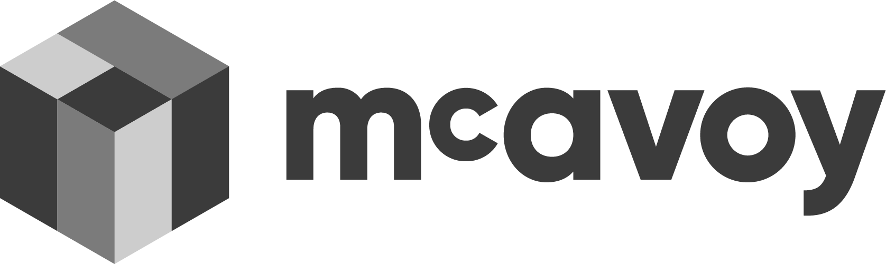
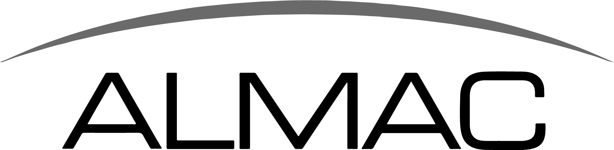
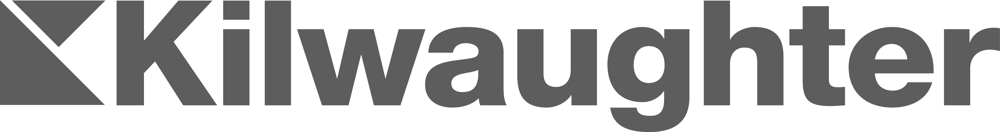
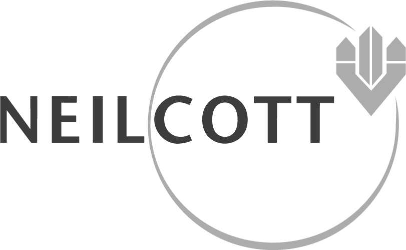
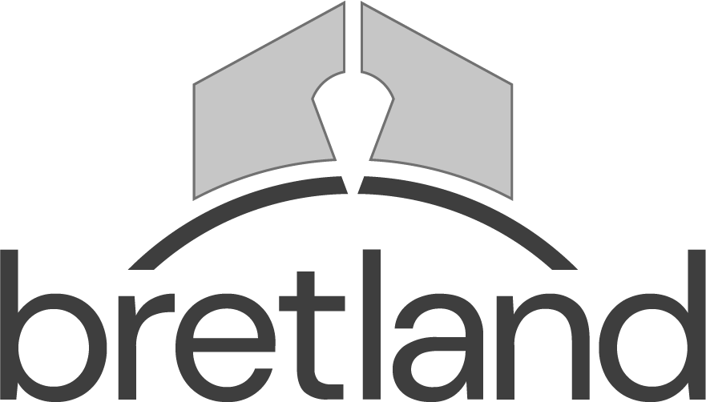
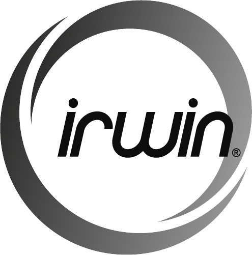
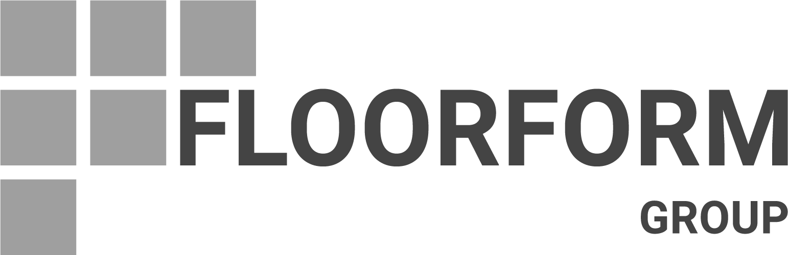
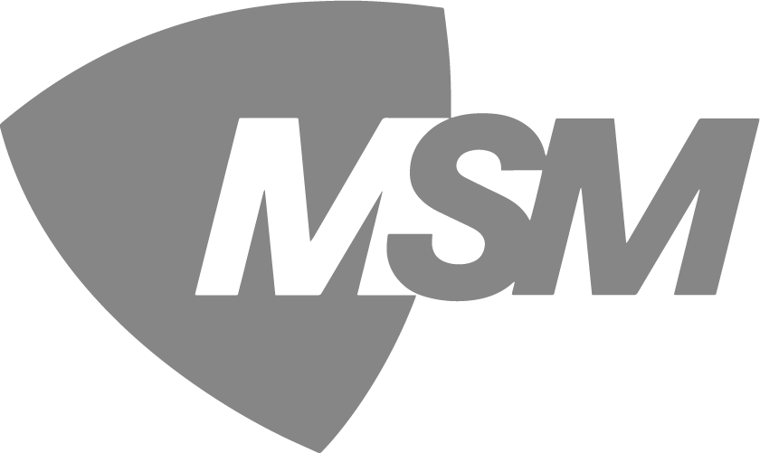
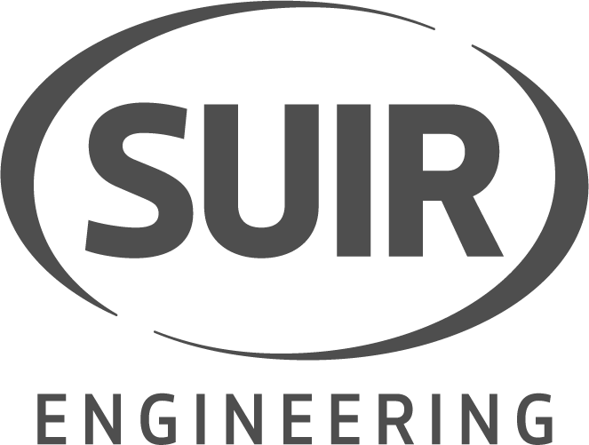
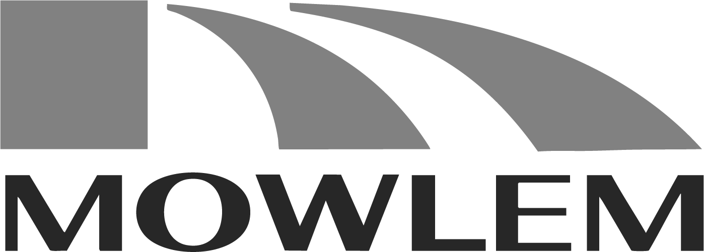
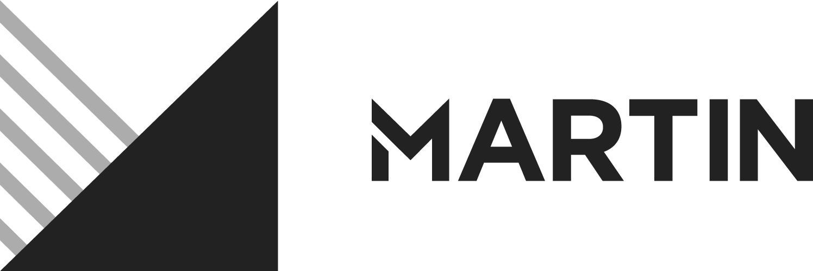